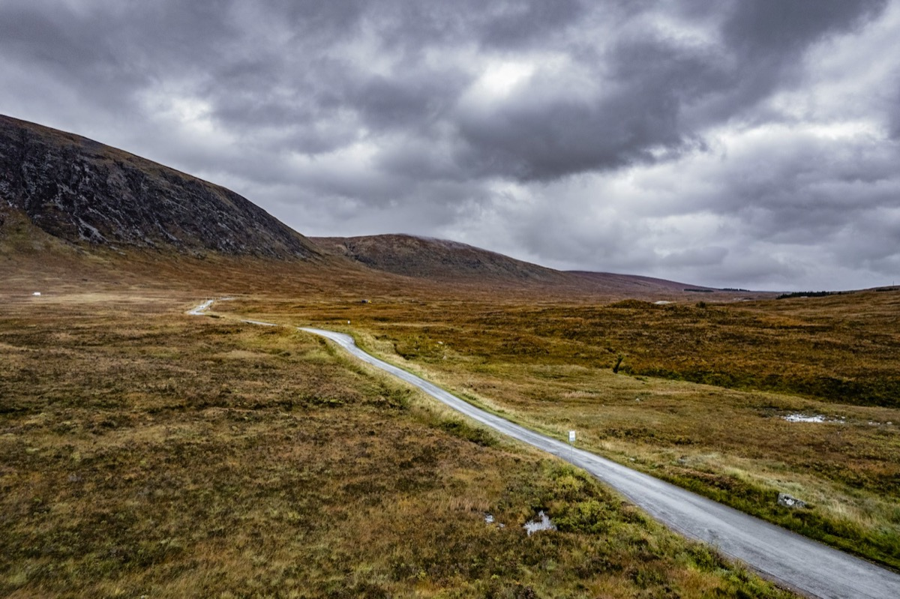
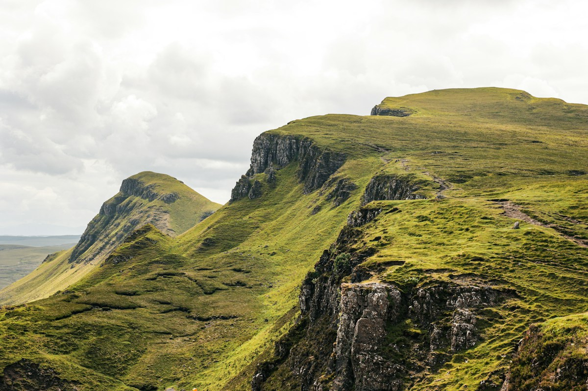
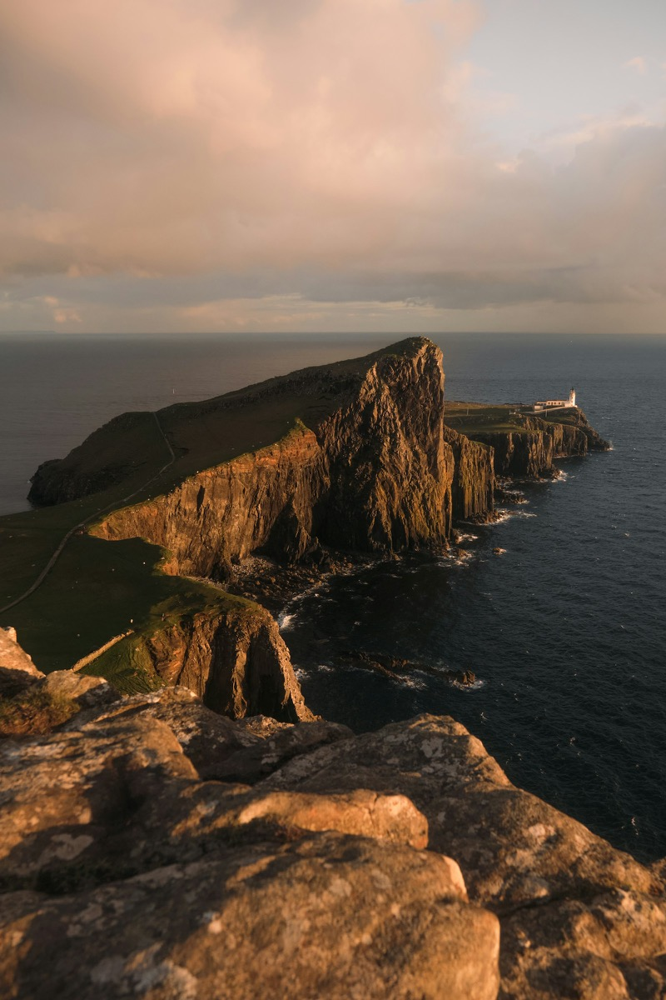
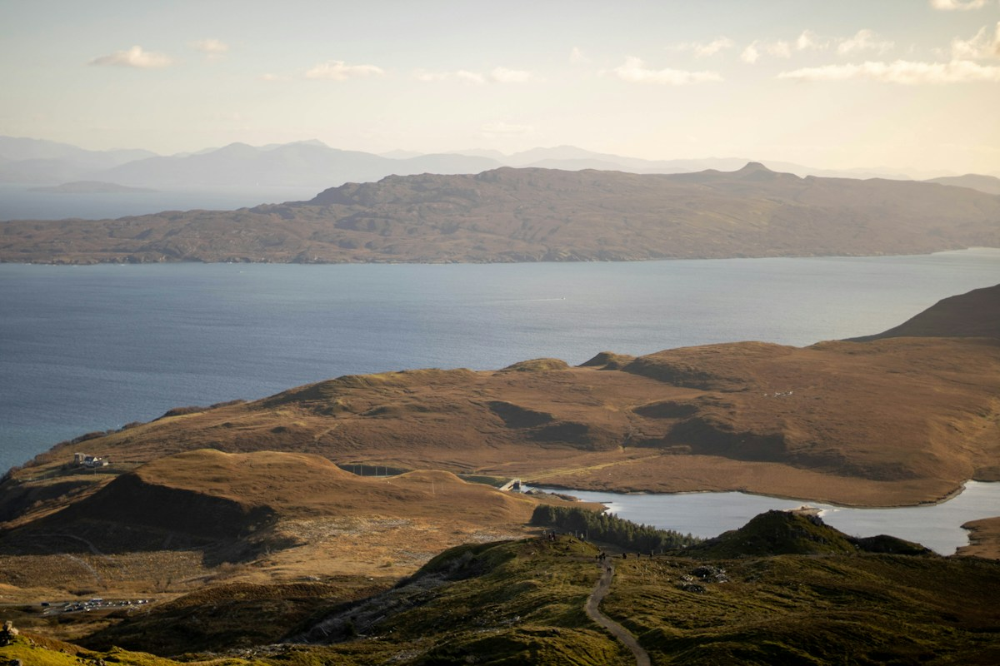

A week on the Skye trail
Tags Travel, Photography
I did not expect to come back with any photographs at all. The forecast for the week read like a dare — five days of “showers”, two of “rain” — and Skye does not need encouragement to live up to it. But the weather on the island moves faster than the forecast, and between the fronts the light arrived in short, unbelievable bursts.

The week from above: the single-track that set the pace of every day. Photograph: Angelo Casto on Unsplash.
Slow mornings
The rhythm of the week set itself: walk early, hide at lunch, walk again into the evening. Mornings belonged to the Trotternish peninsula, where the road threads between grassy slopes and the land keeps sliding gently towards the sea in the largest landslip in Europe.

The Quiraing, mid-morning, one brief window between showers. Photograph: Joss Broward on Unsplash.
One portrait worth keeping
Portraits are the reason I carry the longer lens and the reason it stays in the bag. The one frame I kept from the whole week is not of a person at all: the Neist Point lighthouse at the far west of the island, printed tall, holding the last colour of the day.

Neist Point at sunset, the lighthouse nearly out of film-noir central-casting. Photograph: Kevin Mueller on Unsplash.
What I learned, again
Bring fewer lenses. Bring more socks. The best frame of the day is almost always the one you nearly did not stop for — in this case a still stretch of water below the Storr, with the old basalt skyline holding the last of the light.

Below the Storr at the end of the day, water like poured glass. Photograph: Ash Willson on Unsplash.
A note on the pictures: the photographs in this post come from Unsplash and are credited to their photographers in each caption. They are used under the Unsplash licence — free to use for commercial and non-commercial purposes — a different set of terms from the theme’s MIT code licence, and separate from the example site’s generated assets.